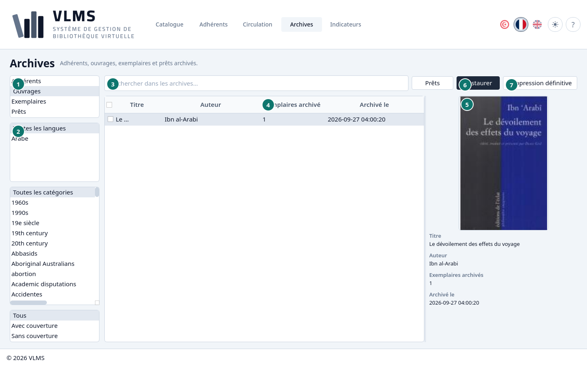
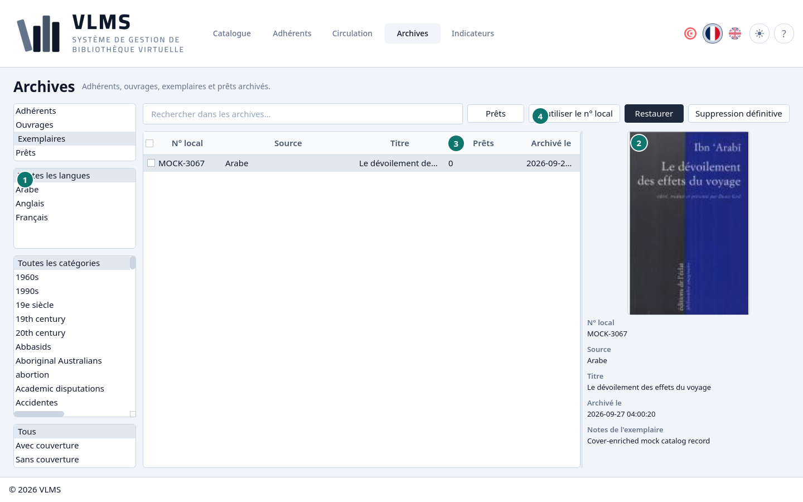
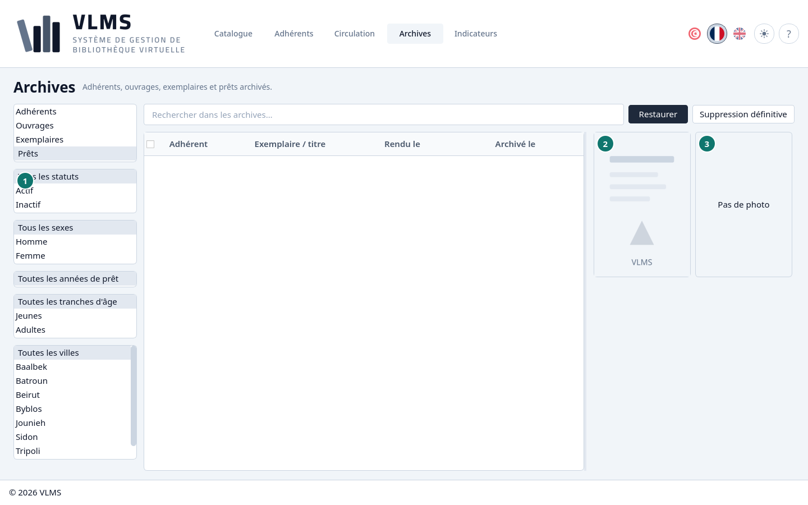
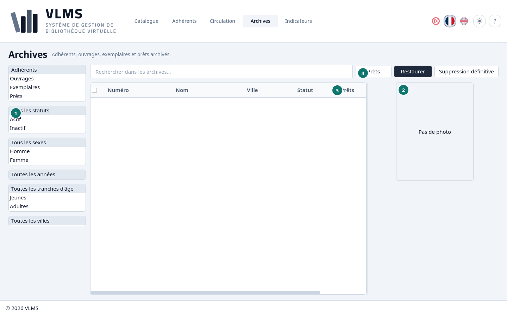
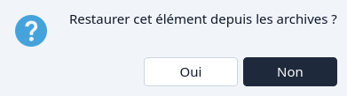

Archives
Ce que Supprimer a mis de côté, et ce qui peut être restauré ou retiré pour de bon.
Supprimer archive. Le titre, l'exemplaire, l'adhérent ou le prêt quitte la liste en service et apparaît ici. Il peut être restauré. Il n'est détruit qu'avec Suppression définitive, et seulement quand l'ordre ci-dessous le permet.
La liste de types à gauche choisit ce que vous regardez : Adhérents, Ouvrages, Exemplaires ou Prêts. La recherche fonctionne comme sur les écrans en service.
Les filtres sous la liste de types changent avec le type, et changer de type les remet sur « Tous ».
- Adhérents et Prêts ont les filtres des Adhérents. Pour un prêt, ils filtrent par l'adhérent qui a emprunté, et l'année est celle du prêt.
- Ouvrages et Exemplaires ont les filtres de langue, de catégorie et de couverture du Catalogue. Un exemplaire est filtré par l'ouvrage auquel il appartient.
Ouvrages


- La liste de types.
- Les filtres du Catalogue : langue, catégorie et couverture.
- La recherche.
- Exemplaires archivés — les exemplaires encore attachés au titre. Un titre ne peut être retiré pour de bon que lorsque ce nombre est zéro.
- La couverture, ou l'image d'attente quand il n'y en a pas.
- Restaurer
- Suppression définitive
Exemplaires


- Les filtres du Catalogue, appliqués à l'ouvrage de chaque exemplaire.
- La couverture de cet ouvrage.
- Prêts — chaque prêt de cet exemplaire, y compris les prêts archivés. Le retrait définitif exige un zéro ici.
- Réutiliser le n° local — donne ce numéro à un titre nouveau ou déjà là. Voir Réutiliser un numéro local.
Prêts


- Les filtres d'adhérent, pour l'adhérent qui a emprunté.
- La couverture de l'ouvrage prêté.
- La photo de l'adhérent, ou Pas de photo.
Sous les images : l'adhérent, le numéro d'adhésion, l'exemplaire, le jour du retour, le jour de l'archivage et les notes du prêt.
Un prêt peut être restauré, ou retiré pour de bon à tout moment. Le retirer ne remet pas l'exemplaire sur le rayon : l'exemplaire était déjà revenu, ou il a été archivé avec son titre.
Adhérents


- Les filtres d'adhérent.
- La photo de l'adhérent, ou Pas de photo.
- Prêts
- Prêts — l'historique des prêts de l'adhérent.
Un adhérent ne peut être retiré pour de bon que lorsque cette colonne est à zéro.
Historique des prêts
Prêts se trouve après la recherche sur les listes Adhérents, Ouvrages et Exemplaires. Il ouvre tous les prêts de l'adhérent, de l'ouvrage ou de l'exemplaire surligné, prêts archivés compris : l'adhérent, le numéro d'adhésion, l'exemplaire, les dates, l'état et le moment de l'archivage. L'historique se lit seulement ; on n'y prête ni n'y retourne rien. Le bouton est grisé quand la ligne n'a jamais été prêtée.
Restaurer
Surlignez une ligne, ou cochez-en plusieurs, et choisissez Restaurer. La confirmation nomme ce qui reviendra dans les listes en service. Non laisse les Archives inchangées.


Les cases fonctionnent ici comme sur chaque liste. Voir Cases.
Retrait définitif
Suppression définitive demande une fois, puis efface la fiche. Cela ne peut pas être annulé.

L'application le permet dans cet ordre :
- Un prêt, à tout moment.
- Un exemplaire, seulement quand Prêts est à zéro. Un prêt archivé compte encore.
- Un livre, seulement quand Exemplaires archivés est à zéro. Retirez ou restaurez d'abord ses exemplaires.
- Un adhérent, seulement quand Prêts est à zéro.
Non sur la confirmation laisse la fiche dans les Archives.